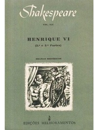

Primeiros Livros e Poemas De William Shakespeare
Poemas
Vênus e Adônis (1593)
Considerado seu primeiro trabalho publicado oficialmente, este longo poema narrativo é uma obra de estilo clássico, elogiada por sua sensualidade e descrições vívidas. Foi dedicado a Henry Wriothesley, o terceiro Conde de Southampton, que se tornou seu patrono.
O Estupro de Lucrécia (1594)
Outro poema narrativo, também dedicado ao Conde de Southampton. Este poema é mais sombrio e trágico, abordando temas de honra, violação e culpa.
Livros/Peças
Henrique VI, Partes 1, 2 e 3 (c. 1590-1592)
Estas são peças históricas que retratam a Guerra das Rosas. São consideradas algumas de suas primeiras incursões no gênero dramático.
Ricardo III (c. 1592-1593)
.jpg)
Outra peça histórica, que se destaca por seu vilão carismático e manipulador. É uma das suas primeiras obras a ganhar grande popularidade.
Tito Andrônico (c. 1593-1594)

Uma de suas tragédias mais sangrentas e violentas, que mostra um lado mais brutal da natureza humana e da vingança.
A Comédia dos Erros (c. 1592)

Uma de suas comédias mais antigas, baseada em comédias romanas, cheia de trocas de identidade e confusões hilárias.
Os Dois Cavalheiros de Verona (c. 1594)

Uma comédia romântica que explora temas de amizade, amor e traição.
A Megera Domada (c. 1593-1594)

Uma de suas comédias mais conhecidas, que aborda o "domínio" de uma mulher indomável para o casamento.
Romeu e Julieta (c. 1594-1596)

Embora tenha se tornado uma de suas tragédias mais famosas, é considerada uma de suas primeiras grandes tragédias, marcando um amadurecimento em sua escrita.